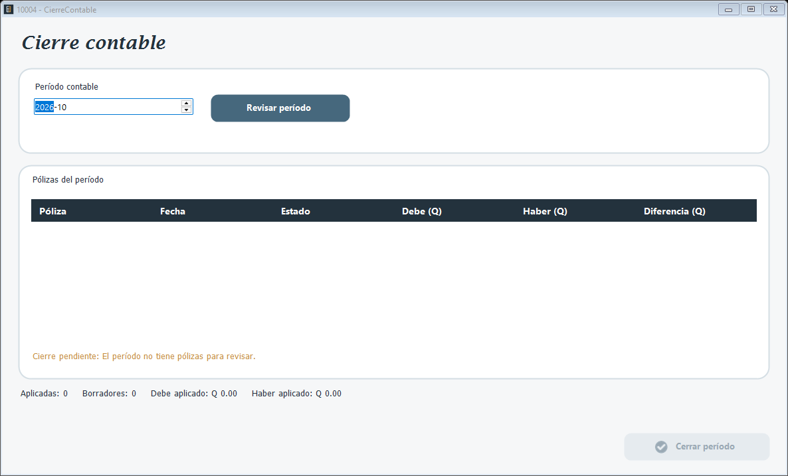

Cierra un período contable. Al cerrar, el período queda como CERRADO, se abre el mes siguiente con los saldos finales y se reinician los movimientos del mes. El acumulado del ejercicio vuelve a cero solo al cerrar diciembre.

1. Elija el Período contable.
2. Presione Revisar período. La tabla Pólizas del período muestra cada póliza con su debe, haber y diferencia, y abajo se ven las pólizas aplicadas, los borradores y los totales aplicados.
3. Si la revisión no encuentra problemas, presione Cerrar período y confirme.
El cierre no se permite si el período no tiene pólizas aplicadas, si quedan pólizas en borrador o validadas sin aplicar, si hay pólizas aplicadas descuadradas, si los meses anteriores no están cerrados o si los saldos no están actualizados. El aviso en rojo indica qué falta.
Las pólizas anuladas no se incluyen en los totales del cierre.